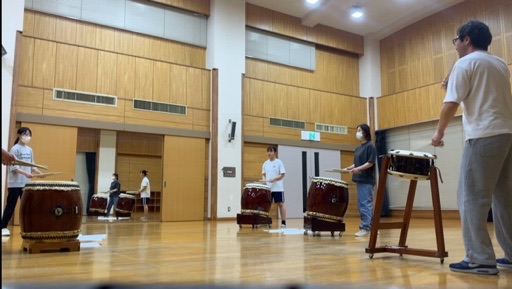
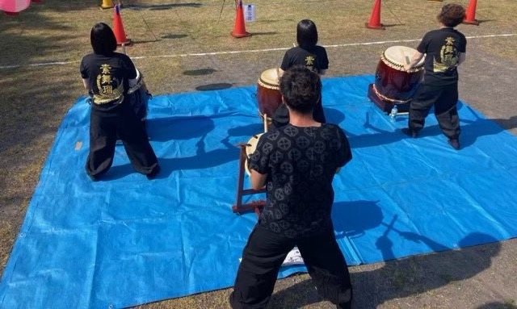

練習からお祭り出演まで、素舞瑠の日常をご紹介します。

月に2回、地域の公民館をお借りして練習しています。基礎打ちから始まり、曲の振り付けや息を合わしせる稽古まで、和気あいあいとた雰囲気の中で行っています。初心者には講師が丁寧に指導します。

地域の文化祭や福祉施設の慰問演奏など、さまざまな場で太鼓を披露して、地域の人々との交流を深めていきたいです。
屋外の特設ステージでの演奏は迫力満点。法被姿で太鼓を打つ瞬間は、緊張と感動の時間です。